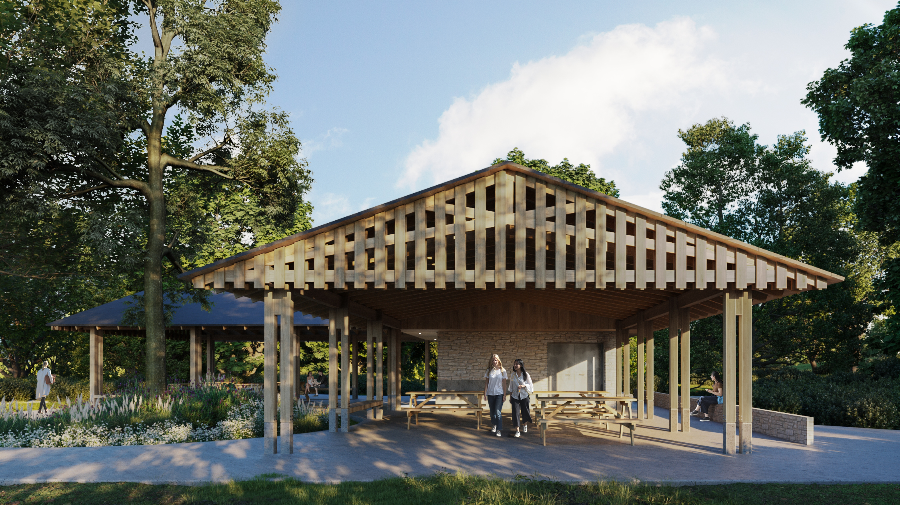
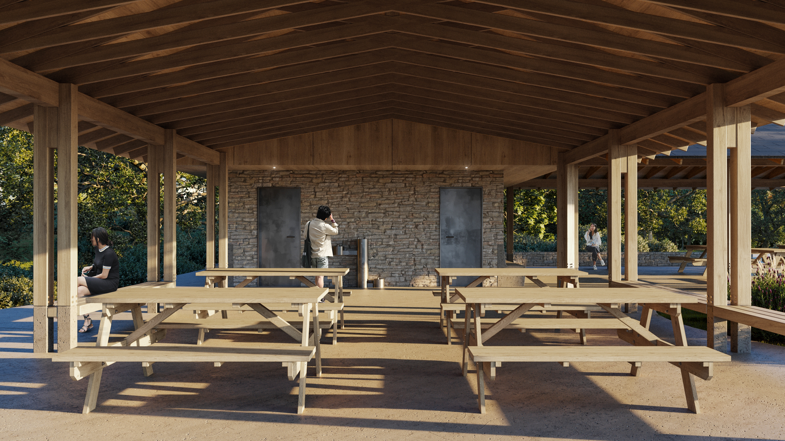
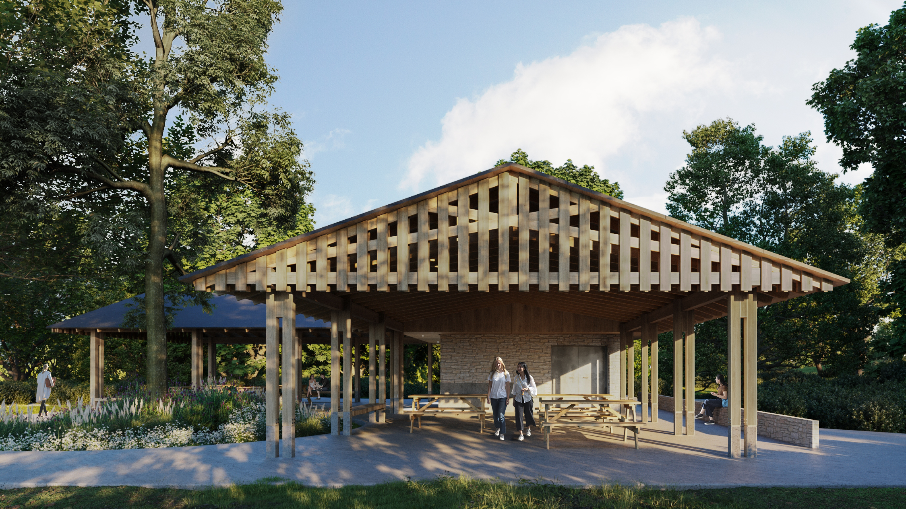
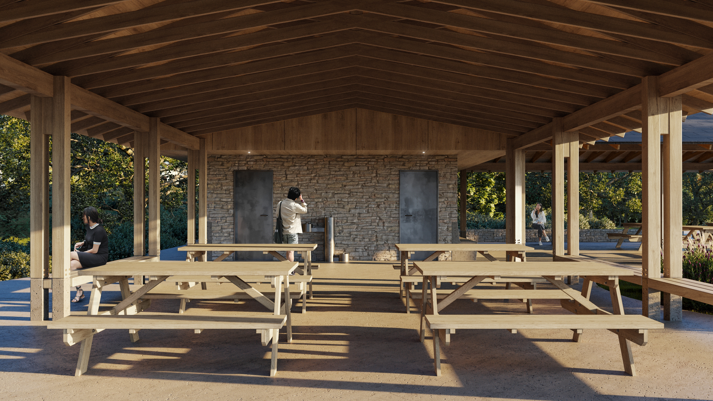

PROJECT:
Harbin Park Shelter
STATUS:
Completed, 2024
LOCATION:
Fairfield, Ohio
The Harbin Park shelter is one of the eight newly designed park
shelters by von Euw Tetrault, situated in Fairfield, Ohio’s Harbin
Park. It seamlessly integrates into a larger master plan, adjacent to
a proposed children’s splash park and playground.
Our design process commenced with an inventory of existing park
shelters in Harbin Park, guiding the development of an architectural
and material language. Referencing the proposed recreation amenities,
the shelter’s form evolved, subtly gesturing towards both, almost
creating two distinct structures. Articulated with pre-engineered
scissor trusses and side-by-side columns at each structural bay, the
shelter embraces a glulam beam and a lower-level bench offering views
across the landscape.
An integrated concrete bench and stone veneer ground the utility
volume at the western corner of the project. Within this volume, we
have housed restrooms and a storage room for the water park’s pumps
and chemicals, enhancing its functionality.
Team members involved include Federica von Euw, Andrew Tetrault,
Isaiah Zuercher, Jacob Mackin, Daniel O'Neill, Donovan Staab.
Credits: Human Nature (Prime/Landscape Architect), IBI Group
(Civil Engineer), Motz Engineering (MEP Engineer), Schaefer (Structural
Engineer)